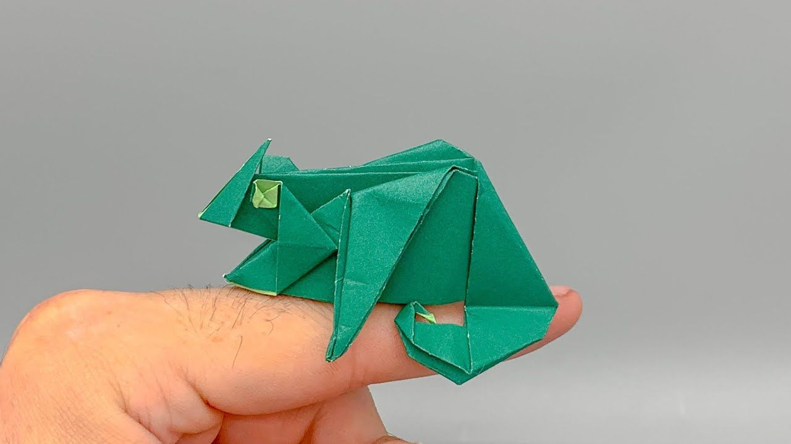

A dragon has: none to four legs, claws, scales and possibly spikes. Optional wings.A dragon has special powers.
There are over 5,000 species of frog. Frogs don't need to drink water as they absorb it through their skin. Some frogs can jump over 20 times their own body length; that is like a human jumping 30m.

There are two types of camels: One humped or “dromedary” camels and two humped Bactrian camels. Camels have three sets of eyelids and two rows of eyelashes to keep sand out of their eyes. Camels have thick lips which let them forage for thorny plants other animals can't eat.
Chameleons are a very unique branch of the lizard group of reptiles. ... Special color pigment cells under the skin called chromatophores allow some chameleon species to change their skin color, creating combined patterns of pink, blue, red, orange, green, black, brown, yellow and purple.